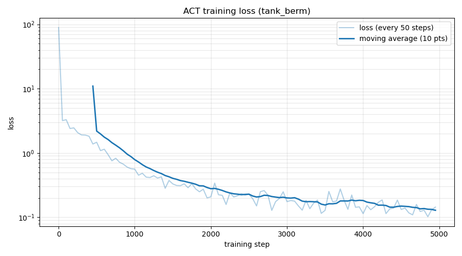
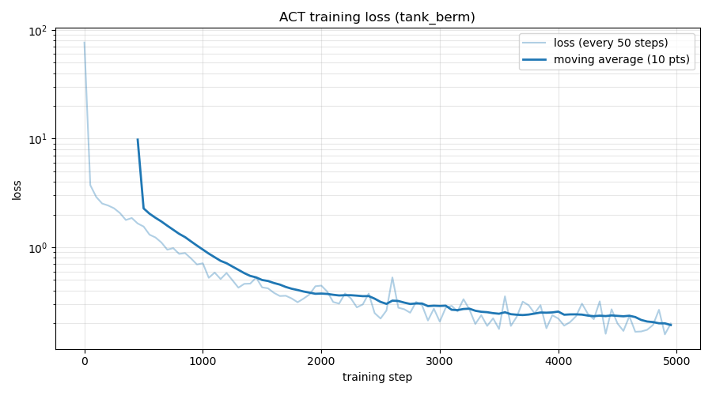
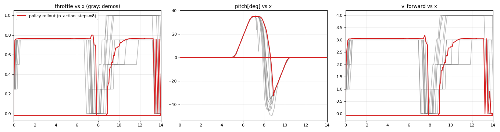
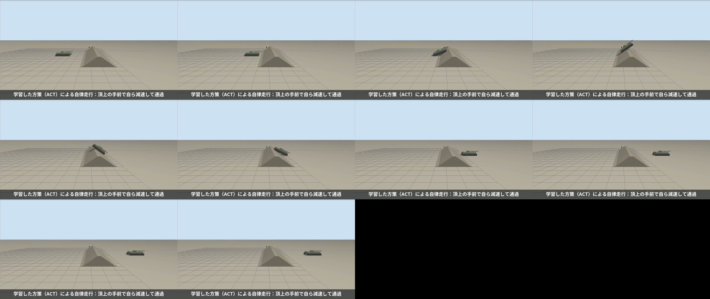
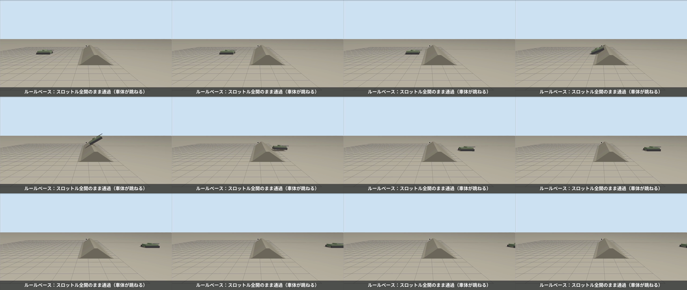
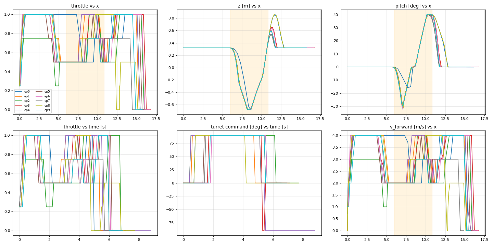
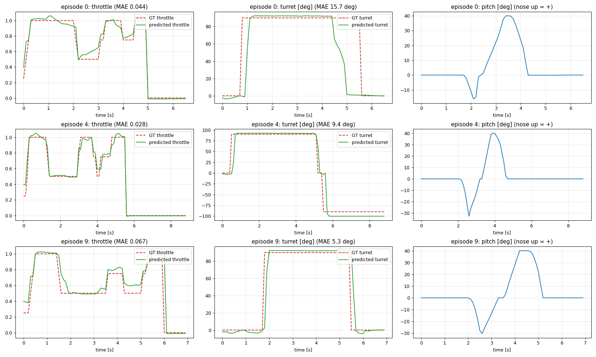
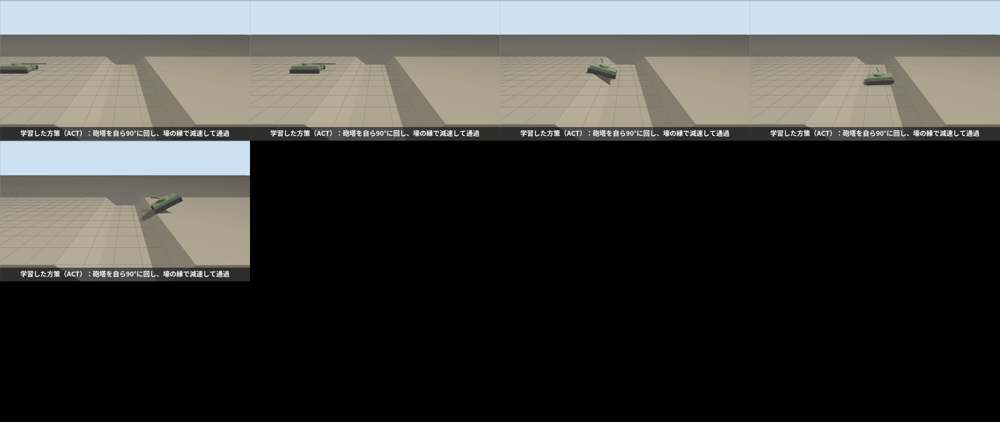
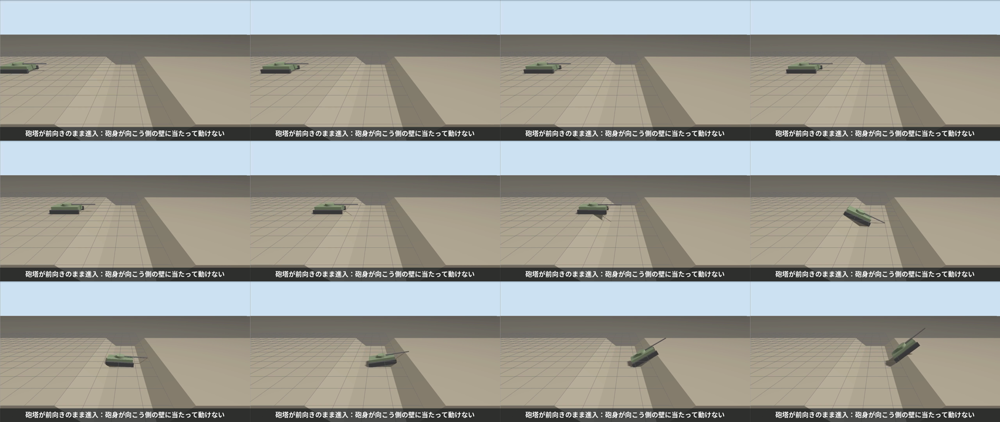

装軌車両の不整地走行を模倣学習（ACT）で再現する
Physical AI 応用編1 最終課題 ／ Ignition Gazebo ＋ ROS 2 Humble ＋ LeRobot（ACT）
1. 概要と目的
車両の無人化・自律化は、建設、災害対応、探査など、さまざまな分野で求められている。一方、その実現には課題が多い。
自動運転技術等は進展しているものの、あくまでも道路を想定したものであり、不整地を走行する車両に直接適用することは難しい。
不整地走行は、路上走行と異なり、地形に応じて速度を適切に切り替える操縦技能が重要であり、この技能は建設機械、災害対応ロボット、惑星探査ローバーなどの不整地走行ロボットで必要となる。
特に車両の重量が大きい場合、段差や溝の縁で車体が宙に浮く（「飛ぶ」）だけで、着地の衝撃が機体の故障の原因になる。
一方で、衝撃を避けるためにずっとゆっくり走るだけでは、作業の効率や、危険な場所に留まる時間の点で不利になる。
通過の瞬間は速度を抑えて衝撃を和らげ、それ以外では速度を出す という操縦技能が重要になる。
本課題では、Ignition Gazebo 上に砲塔付きの装軌車両（多輪スキッドステアで履帯を模擬） を自作し、操縦経験のある人のテレオペから
ACT（Action Chunking with Transformers） で、この技能を学習させた。地形は次の 2 つである。
突堤 （台形の山）：全開のまま頂上を越えると車体が跳ねる。壕 （V 字の溝）：入るときと出るときに車体が飛ぶ。さらに、砲塔が前向きのまま進入すると砲身が向こう側の壁に当たって動けなくなる ので、走りながら砲塔を 90° に回す操作も必要になる。
結果の要約
突堤 ：学習した方策は 10 試行すべてで跳ねずに通過した。所要時間は全開のルールベースと同程度（3.1 秒対 3.8 秒）で、跳ねないルールベース（一定の低速）の 2〜4 倍速かった。壕 ：方策は、砲塔を 90° に回す操作を含めて再現し、10 試行すべてで砲身を接触させずに通過した。飛びは熟練者のデモと同程度（空中の合計 0.85 秒対 0.83 秒）で、デモより約 26% 速く 通過した（3.7 秒対 5.0 秒）。行動チャンクの実行ステップ数、データの時間の基準、評価の基準が結果を大きく左右することが分かり、その過程の失敗と対策を第 6 章にまとめた。
2. システム構成
teleop_tank （キー操作、20 Hz）
policy_node（ACT） （推論、10 Hz）
/tank/command [throttle, steering, turret]
tank_driver /cmd_vel と砲塔角へ変換
Ignition Gazebo
自作車両（14 輪＋砲塔） DiffDrive／JointPosition IMU／Odometry／JointState ros_gz_bridge で接続
state_publisher 観測を1つにまとめる
/tank/state [x, z, pitch, v_forward, turret]
rosbag2 → LeRobot データセット → ACT 学習
方策の入力
teleop と方策は同じ /tank/command に配信するので、差し替えるだけで動く。学習の行動は /tank/command の 3 次元、観測は /tank/state の 5 次元。
図1 システム構成。車両・地形・操縦系・観測系・評価ツールはすべて自作。
車両モデル（自作・架空のパラメータ）
車体 2.0×1.0×0.4 m、総質量約 445 kg。片側 7 輪（半径 0.15 m）を詰めて配置し、DiffDrive に左右 14 輪の関節をすべて登録してスキッドステア とした。横方向の摩擦を小さくして、その場旋回できるようにした。
履帯は見た目用の箱で、衝突判定は車輪が担当する。砲塔は鉛直軸の関節（JointPositionController）で回す。砲身にも衝突判定を付け 、壁への接触を再現した。
モデルは、形状と質量から慣性を計算する生成スクリプトで作る（14 輪の定義の間違いを防ぐ）。砲身の長さで挙動が変わる ため、突堤用（砲身 1.3 m）と壕用（2.0 m、接触センサー付き）の 2 種類を用意した。
操縦系・観測
行動 [throttle, steering, turret_angle]：アクセル（−1〜1、0.25 刻み）、ハンドル、砲塔角。teleop と方策は同じ /tank/command に配信するので、差し替えるだけで動く。全開は 4 m/s。観測 [x, z, pitch, v_forward, turret_angle]：真値の位置（OdometryPublisher）、IMU のピッチ角（機首上げが正）、車輪オドメトリの速度、砲塔角。地形の局面（登り・頂上・下り、壕の入口・底・出口）を見分けられる。
地形
突堤 ：高さ 1.0 m、斜面 35°、頂上の平らな部分 0.3 m（頂上の縁を鋭くして、全開で越えると跳ねるようにした）。壕 ：上端の幅 4.8 m、深さ 1.0 m、壁 40°。操縦者の要望で、全開（4 m/s）でも飛び越えられず底まで落ちる広さにした。幅を広げると砲身が壁に当たらなくなるため、砲身を車体の長さと同じ 2.0 m にして、前向きなら速度にかかわらず壁に当たるようにした（第 6 章）。
3. 学習の方法
突堤 壕 デモ 操縦経験者のテレオペ 10 エピソード 同 10 エピソード（砲塔を 0° から始めて、走りながら 90° に回す） データ 815 フレーム（fps 10） 725 フレーム（fps 10） 時間の基準 実時間（RTF≈0.75 の GUI で記録） シミュレーション時刻（--use-sim-time） 学習 ACT、chunk 16、バッチ 8、5000 ステップ（CPU 約 23 分） 同（約 30 分） 推論 シミュレーション時刻の 13.3 Hz、行動チャンクを 8 ステップ実行 シミュレーション時刻 10 Hz、16 ステップ実行
操縦の前後の停止区間は、変換時に切り詰めた（第 6 章）。観測は 5 次元（/tank/state）、行動は 3 次元（/tank/command）で、カメラは使っていない。


図2 学習 loss（縦軸は対数）。左：突堤（約 0.14）、右：壕（約 0.2）。 4. 結果
4.1 突堤（各 10 試行）
車両を初期位置に戻して走らせ、x ≧ 13 m に達するまでを 1 試行とした。「跳ねずに通過 」は、通過し、かつ最高の高さ z < 1.70 m、かつ空中時間 < 0.6 秒（IMU の加速度の大きさが 3 m/s² 未満の時間）とした。
閾値は、熟練者のデモ（最高 z が 1.40〜1.61 m）と全開（約 1.84 m）の間に置いた。所要時間はシミュレーション時刻で測った。
方式 通過 跳ねずに通過 最高 z（平均） 空中（平均） 所要時間（平均） ルールベース：全開（1.0）一定 10/10 0/10 1.84 m 0.87 s 3.8 s ルールベース：0.5 一定 10/10 10/10 1.57 m 0.50 s 7.2 s ルールベース：0.25 一定 10/10 10/10 1.46 m 0.34 s 13.7 s ACT（行動チャンクの実行 1 ステップ） 10/10 0/10 1.71 m 0.88 s 3.0 s ACT（実行 8 ステップ） 10/10 10/10 1.44 m 0.26 s 3.1 s ACT（実行 16 ステップ） 10/10 7/10 1.53 m 0.42 s 4.1 s
速く走ると跳ね、跳ねないようにすると遅い というトレードオフが、ルールベースの結果にはっきり出ている。ACT（8 ステップ）は、全開と同程度の速さのまま、頂上の手前で減速して跳ねを避けた。

図3 突堤：方策の走行（赤）と熟練者のデモ（灰色）。左：スロットル、中：ピッチ、右：速度（横軸は車両の x）。頂上（x≈7.5 m）で減速し、越えてから加速している。 
図4 突堤：方策の走行の動画から切り出したコマ。頂上でも跳ね上がらずに越えている。 
図5 比較：全開のままの通過。頂上で車体が大きく跳ね、機首を下げて着地している。 4.2 壕（各 10 試行）
砲塔 0° から始め、x ≧ 12 m に達するまでを 1 試行とした。「接触せずに通過 」は、通過し、かつ砲身の接触センサーが 0 件。空中の時間は、壕の中央（x=8.4 m）の手前を「入る」、先を「出る」として分けて測った。
熟練者のデモは、記録した操作指令をシミュレーション時刻に合わせて再生し、同じ指標で測った（青）。
方式 通過 接触せずに通過 空中：入る 空中：出る 空中：合計 所要時間 熟練者のデモ（操作指令を再生） 10/10 10/10 0.35 s 0.48 s 0.83 s 5.0 s ルールベース：砲塔 90°・0.25 一定 10/10 10/10 0.22 s 0.04 s 0.26 s 13.1 s ルールベース：砲塔 90°・0.5 一定 10/10 10/10 0.32 s 0.34 s 0.65 s 6.7 s ルールベース：砲塔 90°・全開一定 10/10 10/10 0.52 s 0.48 s 1.00 s 3.6 s ルールベース：砲塔 0°（前向き）・0.5 一定 10/10 0/10 0.35 s 0.25 s 0.60 s 6.8 s ACT（実行 1 ステップ） 0/10 0/10 ― ― ― ― ACT（実行 4 ステップ） 9/10 8/10 0.46 s 0.49 s 0.95 s 3.6 s ACT（実行 8 ステップ） 10/10 10/10 0.46 s 0.51 s 0.96 s 3.3 s ACT（実行 16 ステップ） 10/10 10/10 0.37 s 0.48 s 0.85 s 3.7 s
砲塔が前向きだと、速度にかかわらず砲身が壁に当たる（0/10）。砲塔を 90° に回せば、どの速度でも接触しない。
ACT（16 ステップ）は、デモと同程度の飛び（0.85 秒対 0.83 秒）で、約 26% 速く通過 した（3.7 秒対 5.0 秒）。砲塔を回す操作も 10/10 で再現できた。行動チャンクを続けて実行しないと（1 ステップ）、動けない。ルールベースでは、一定の低速（0.25）は飛びが小さい（0.26 秒）が 13 秒かかり、全開は速い（3.6 秒）が飛びが大きい（1.00 秒）。

図6 壕のデモ 10 エピソード（橙の帯が壕）。走り出しは全開、壕の手前で 0.5 に緩め、底で上げ、出口の縁の手前で再び緩める操作がそろっている。砲塔は全エピソードで 0° から 90° に回している。 
図7 学習データ上の予測（緑）と操縦者の操作（赤の破線）。スロットルの誤差は 0.03〜0.07、砲塔角も走り出してすぐに 90° に回す動きを再現している。 
図8 壕：方策の走行の動画から切り出したコマ。砲塔を自ら 90° に回し、壕の縁で減速して通過する。 
図9 比較：砲塔が前向きのまま進入すると、砲身が向こう側の壁に当たって動けなくなる。 4.3 「飛ばず、速く」の余地
デモ自体に、まだ飛びが残っていた（入る 0.35 秒、出る 0.48 秒）。縁の手前だけを 0.25 に落とし、ほかは全開にするルールベースの速度パターンで調べると、
出口の縁の手前で 0.25 まで落とすと、出口の飛びがほぼなくなる （0.04〜0.08 秒）。次のとおり、飛びを大きく減らしつつ、低速一定の約 2 倍の速さで通過できる余地がある。
操作（砲塔 90°） 空中：入る／出る／合計 所要時間 熟練者のデモ（再生） 0.35／0.48／0.83 s 5.0 s 0.25 一定 0.22／0.04／0.26 s 13.1 s 縁の手前だけ 0.25（入口 x=4.3〜7.0 m、出口 x=8.9〜11.5 m）、他は全開 0.28／0.04／0.32 s 7.4 s 縁の手前だけ 0.35 0.44／0.20／0.64 s 5.9 s
この操作をデモにすれば、方策も「より飛ばず、速く」に近づくと考えられる（今回は時間の都合で未実施。今後の課題）。
5. 工夫した点
タスクの設計 ：「飛びを抑えつつ速度を保つ」という、実用上の要請を、速度の切り替えと砲塔の操作を含む課題にした。地形（突堤・壕）、砲身の長さ、壕の幅を、操縦者の意見と走行試験で調整した（砲身が壁に当たる幅の範囲を、幅を変えて調べて決めた）。操縦系 ：アクセル＋ハンドル方式で、teleop と方策を同じトピックで差し替えられる。指令が途絶えたら止まるウォッチドッグ、操縦中に「飛び」をリアルタイム表示するモニタ（hop_monitor）を作った。評価の仕組み ：車両のリセット、砲身・車体の接触センサー、IMU による空中時間、シミュレーション時刻での所要時間を自動で記録する評価ノードを作った。熟練者のデモを同じ指標で測る再生モードも作り、人の水準を基準に比較 した。再現性 ：試験は、操縦者の画面のシミュレーションと干渉しない隔離環境（ROS ドメインと Gazebo パーティションを分けた環境）で行い、動画は撮影専用の仮想ディスプレイで自動録画する。条件ごとの結果は、すべて CSV で残してある。失敗の記録と原因の分析 ：結果が悪かった（または不自然だった）場面は、データ・ログ・トピックの値から原因を切り分けて、次章に記録した。
6. 失敗と考察
方策が動き出せない（開始前の停止区間） ：学習データ上の予測は良好なのに、実行すると動き出さなかった。各エピソードの先頭には、操縦を始める前の停止区間があり、その間の観測は毎回同じなのに、動き出す時刻は毎回違う。方策には時刻の情報がなく、最頻値の「止まったまま」を出力していた。変換時に、操縦の前後の停止区間を切り詰めて解決した（予測の誤差が約半分に）。頂上や縁で減速しない（行動チャンクの実行ステップ数） ：毎ステップ、行動チャンクの先頭 1 個だけを実行すると、「少し先で減速する」という計画の手前の部分しか使われず、跳ねずに通過できたのは 0/10（突堤）、動けないのが壕だった。デモの減速位置が約 1 m ばらつくため、同じ状態に「落とす」と「保つ」の 2 つの答えがあることも一因。行動チャンクを 8〜16 ステップ続けて実行すると解決した（再学習は不要）。ただし長すぎる 16 ステップでは突堤で 7/10 に下がった。評価結果が実行のたびにばらつく（時間の基準のずれ） ：同じ方策で「跳ねずに通過」が 4/10〜10/10 と変わった。方策は実時間の 10 Hz で指令を出すが、シミュレーションの速さ（RTF）は 0.8〜0.98 で揺れる。さらに、デモは GUI 付き（RTF 約 0.75）で記録し、rosbag は実時間でタイムスタンプを付けるため、データの「0.1 秒」はシミュレーション時間の約 0.075 秒だった。制御周期をシミュレーション時刻の 13.3 Hz（= 10 ÷ 0.75）にすると 10/10 で安定した。以後のデモは --use-sim-time で記録している。学習データの時間の基準を、推論時の制御周期と合わせる ことが重要。砲塔が初期位置に戻っていない（壕の 1 回目のデモ） ：操縦者の指摘で、10 エピソード中 9 つで開始時点の砲塔がすでに 90° だったと分かった。位置のリセットでは砲塔の関節角は戻らず、teleop が配信し続ける古い指令が、リセットの 0° を上書きしていた。teleop のリセット信号と、砲塔が 0° に戻るまで待つ処理を足して、撮り直した。壕で「飛び越え」と「砲塔の必要性」を両立させる ：当初の寸法では、全開で壕を飛び越えられた。幅を広げると飛び越えられなくなるが、今度は前向きでも砲身が壁に当たらなくなった。壁を急にすると、ゆっくり走る方が登れず、全開が勢いで通過する逆の結果になった。砲身を 2.0 m に長くして、広い壕でも前向きなら壁に当たるようにした。なお、この車両は車輪の駆動力に上限がなく壁を登れてしまうため、「落ちて壁に激突して動けなくなる」は再現できなかった（限界）。砲身を長くすると突堤の方策が劣化した ：砲身 2.0 m に統一すると、突堤の方策が 10/10 から 5〜6/10 に下がった（砲塔の重さと重心が変わる）。デモの撮り直しを避けるため、突堤用と壕用の 2 種類の車両に分けた。評価の基準が人の水準より厳しすぎた ：壕の「飛ばずに通過」（空中の合計 0.6 秒未満）は、熟練者のデモ自体が全エピソードで超えていた（0.62〜1.0 秒）。方策が全条件で 0/10 になるのは基準の問題だった。デモを再生して同じ指標で測り、人の水準を基準に比較する 形に改めた。評価ノードの不具合（リセット中に方策が走る） ：リセットの待ち時間を延ばした結果、方策がリセット中に先へ進み、所要時間の平均が 1.6 秒と不自然になった（最高速度で x=12 m に達するには最短でも約 3 秒）。リセット中は方策を止める処理を足して、評価をやり直した。数値が物理的にありえない値になっていないか、結果を見て検算する ことで気づけた。開発環境の問題 ：(a) 操縦者の画面のシミュレーションと、私の試験が同じ ROS トピックを共有して干渉した → 試験を隔離環境にした。(b) 停止スクリプトが操縦者の Gazebo を中途半端に止めて、応答しない状態にした → 強制終了の保険を追加。(c) ros2 topic pub が、受信側の存在しないトピックで待ち続け、リセットが 21 分固まった → -w 0 と timeout を付けた。(d) pkill -f が自分自身のコマンド行に一致して途中で終わる → パターンの先頭を [] で囲んだ。
限界と今後
シミュレーションはほぼ決定的で、毎回同じ初期位置から始めるため、10 試行は独立ではない。初期位置や地形の寸法を変えた汎化の評価は今後の課題。
行動チャンクの実行ステップ数は、評価結果を見て選んでおり、評価と調整に同じ環境を使っている。
デモには、まだ飛びが残っている。第 4.3 節の「縁の手前で 0.25 に落とす」操作で撮り直せば、さらに飛びを減らせる見込み。
突堤と壕を 1 本のコースにまとめた通しの学習、本物の履帯（TrackedVehicle プラグイン）への置き換え、カメラ入力は未実施。
7. 再現手順と参考
コード一式（モデル・地形の生成スクリプト、ROS 2 パッケージ、変換・学習の設定、評価スクリプト、撮影スクリプト）は GitHub のリポジトリにあり、README の手順で再現できる。
条件ごとの全試行の記録は results/、作業の経緯と考察は WORKLOG.md にある。
参考：Qiita「gazeboとROS2を連携してロボットを操作する」（N622）— ROS 2 と Gazebo の連携の考え方を参考にした（コードとモデルは自作）。
matsuolab/pai_training — rosbag から LeRobotDataset への変換と ACT の学習・推論の仕組みを参考にした。
LeRobot（Hugging Face）。T. Z. Zhao et al., “Learning Fine-Grained Bimanual Manipulation with Low-Cost Hardware”, 2023（ACT）。
車両のパラメータはすべて架空の値である。